Selamat Datang di Trash Classification
Unggah foto sampah yang kamu temukan, dan kami akan membantu menebak jenisnya! Pilah sampah jadi seru dan bisa bantu bumi jadi lebih bersih. Yuk, main sambil belajar daur ulang!

Cara Menggunakannya

1. Tekan Mulai
Kemudian pilih gambar yang
akan di klasifikasi.

2. Tekan Klasifikasi
Model akan
mengklasifikasikan gambar yang dipilih.

3. Hasil Klasifikasi
Hasil klasifikasi
akan ditampilkan berupa jenis sampah dari gambar yang telah
diunggah.